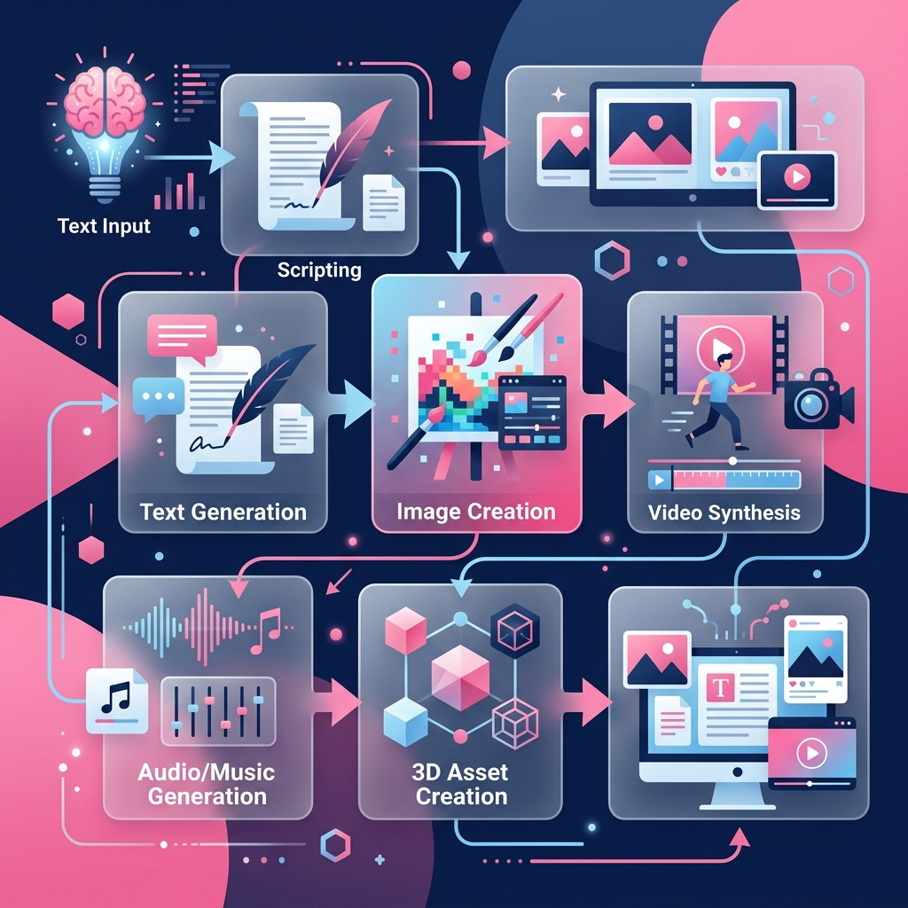

Kết hợp chuỗi công cụ generative AI như một đòn bẩy tư duy để tạo ra các sản phẩm truyền thông chuyên nghiệp, độc đáo và nhất quán về thị giác.
Ứng dụng sức mạnh của Generative AI (AI tạo sinh) để thiết kế các nội dung truyền thông, tối ưu hóa quá trình lên ý tưởng và sản xuất hình ảnh đồ họa trực quan một cách nhanh chóng.
| STT | Công cụ AI | Vai trò trong dự án |
|---|---|---|
| 1 | ChatGPT (GPT-4) | Lên ý tưởng, tìm kiếm số liệu, tạo nội dung cốt lõi cho Infographic. |
| 2 | DALL-E 3 | Tạo hình ảnh concept/biểu tượng minh họa độc đáo, nghệ thuật. |
| 3 | Canva AI | Tối ưu hóa bố cục Infographic, rút gọn văn bản, đề xuất màu sắc. |

Công nghệ AI không thay thế sự sáng tạo của con người, mà nó đóng vai trò như một bộ khuếch đại (amplifier) năng lực. Việc xây dựng một pipeline chuẩn từ Text-to-Text (tạo dàn ý) đến Text-to-Image (tạo hình ảnh) giúp giảm 80% thời gian thiết kế nhưng vẫn giữ được thông điệp cốt lõi.